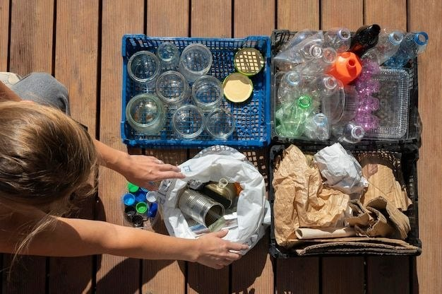
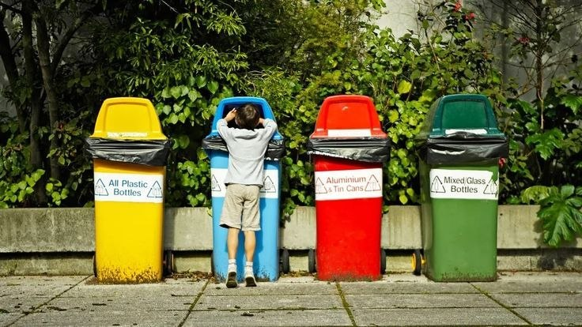
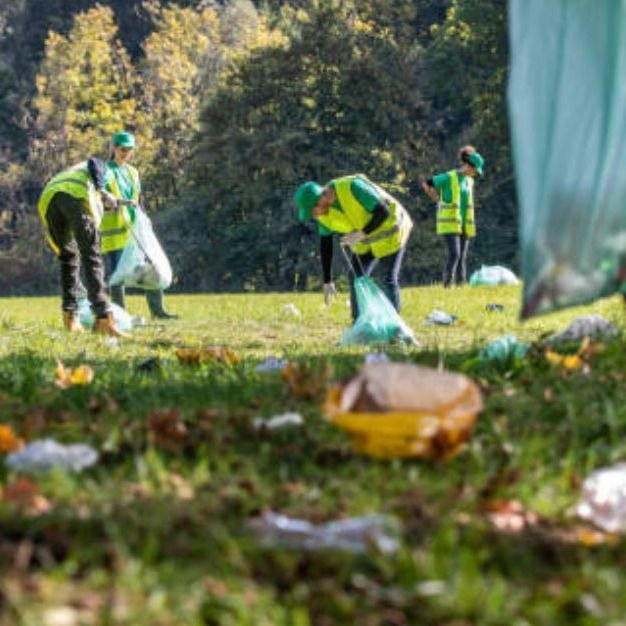
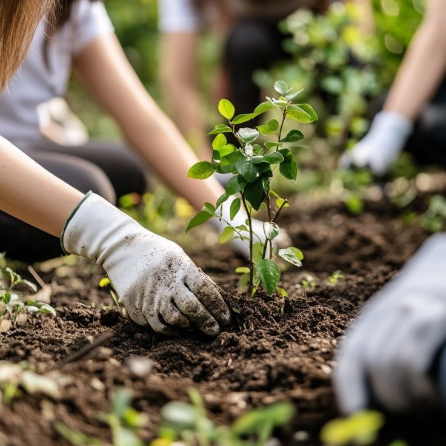
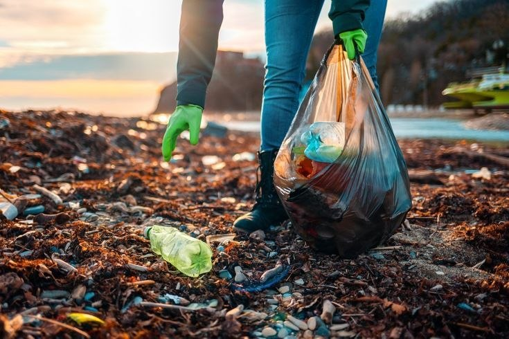

Recolección en casaReducir y separar en origen
Separar envases, cartón limpio y restos orgánicos desde casa evita que la basura sature los drenajes y facilita la labor de las rutas de recolección.
Aprende prácticas útilesEducación ambiental · Salud · Comunidad
EcoCampeche conecta información, participación y acción comunitaria para impulsar un manejo responsable de los residuos y cuidar la salud de quienes habitamos Campeche.
Iniciativa comunitaria · Campeche, Sector 4A
“El lugar que cuidamos juntos se convierte en el hogar que merecemos.” Una invitación a actuar desde nuestra comunidad
Informarse es el primer paso
Los residuos mal dispuestos no solo afectan el paisaje: pueden obstruir drenajes, contaminar espacios comunes y favorecer condiciones que ponen en riesgo la salud.

Recolección en casaSeparar envases, cartón limpio y restos orgánicos desde casa evita que la basura sature los drenajes y facilita la labor de las rutas de recolección.
Aprende prácticas útiles
Salud y prevenciónDepositar residuos en contenedores cerrados y eliminar cúmulos de agua estancada previene la proliferación del zancudo del dengue en el Sector 4A.
Conoce los riesgos Recolección activa
Recolección activa
Un reporte fotográfico fechado y jornadas vecinales con equipo de protección permiten sanear focos críticos e impulsar respuestas oficiales.
Prepara un reporteDe la observación a la acción
Con organización y evidencia clara, las necesidades del sector pueden comunicarse y convertirse en propuestas de mejora.
 Diagnóstico visual
Diagnóstico visual
Fotografiar los puntos críticos con fecha y hora desde un lugar seguro para respaldar solicitudes formales de recolección ante entes municipales.
Ver ejemplos para documentar
Gestión formalDescribir con exactitud el volumen de desechos, su ubicación precisa y solicitar rutas oficiales de recolección mediante oficio con seguimiento.
Preparar reporte descargable
ReforestaciónSembrar plantas autóctonas y árboles jóvenes en zonas saneadas para crear sombra, afianzar taludes y evitar que vuelvan a acumularse residuos.
Conocer formas de colaborarSeguimiento: documentar las fechas de solicitud y respuesta ayuda a mantener la comunicación con las autoridades. EcoCampeche informa y orienta; no es un canal oficial de denuncias.
La separación inicial en origen reduce hasta un 60% la sobrecarga en colectores y preserva la salubridad de los espacios públicos en Campeche.
Identificar contenedores por color facilita el reciclaje y resguarda a los trabajadores de residuos frente a materiales punzocortantes.
Equipados con guantes y calzado seguro, los residentes del Sector 4A demuestran que la organización comunitaria recupera calles y plazas.
Sustituir antiguos botaderos con plantas autóctonas consolida el cambio, protege el suelo y crea pulmones verdes para la comunidad.

Evitar que los plásticos alcancen los canales fluviales previene anegamientos en época de lluvias y protege los ecosistemas marinos del golfo de Cariaco.
La participación continua de jóvenes, familias y líderes vecinales es la clave para un Campeche limpio, saludable y resiliente.
Manual paso a paso de recolección y cuidado
Guía visual estructurada a pantalla completa para facilitar la separación en el hogar, la preparación segura y la recuperación de espacios públicos en el Sector 4A.
Mantén recipientes separados para los restos orgánicos de alimentos, los materiales reciclables limpios y secos (plásticos, latas, vidrio, cartón) y los residuos que requieren manejo especial. Separar en el hogar evita que más del 60% de los desechos contamine espacios comunes y drenajes.
Escurre y enjuaga los envases para evitar malos olores y no atraer roedores o mosquitos. Pliega las cajas de cartón para reducir el volumen y resguarda vidrios o latas con bordes filosos dentro de cajas protectoras para proteger a los recolectores de cortes e infecciones.
Coordina con el consejo comunal y vecinos del sector, define un perímetro claro y usa guantes resistentes y calzado cerrado. No toques residuos hospitalarios, químicos o cables caídos, y jamás desciendas al interior de canales profundos sin asistencia autorizada.
La siembra de plantas autóctonas y árboles jóvenes en zonas saneadas transforma antiguos focos de basura en áreas recreativas y sombreadas. La vegetación ayuda a fijar el terreno de los taludes, reduce la erosión y estimula el sentido de pertenencia en el vecindario.
Los drenajes y canales fluviales son vitales durante las tormentas tropicales. Evitar que bolsas plásticas, envases y ramas obstruyan los aliviaderos previene anegamientos en las viviendas cercanas y protege la costa marina frente a la contaminación por microplásticos.
Establezcan acuerdos claros de seguimiento vecinal para garantizar que el área saneada se mantenga limpia en el tiempo. La educación ambiental compartida y el reconocimiento mutuo fortalecen la convivencia y demuestran el poder de la acción comunitaria organizada.
Recolección responsable: respeta los días y horarios confirmados localmente. No abras bolsas ni mezcles pilas, medicamentos, aceites o químicos con los residuos comunes. Consulta la guía de clasificación
Conciencia que se convierte en acción
Infórmate, separa tus residuos y suma tu voz a iniciativas seguras, organizadas y verificadas en nuestro territorio.
De lo local a lo colectivo
Cada sector tiene una historia y necesidades propias. Conocerlas permite proponer acciones pertinentes y construir soluciones junto a sus habitantes.
Conoce el contexto de la comunidad, las situaciones relacionadas con residuos y cómo documentarlas para promover atención y rehabilitación.
Explorar CampecheLa plataforma está pensada para crecer: cada comunidad podrá compartir su contexto, evidencias, prioridades y propuestas.
Conoce cómo participarUna invitación abierta
Comparte información confiable, separa tus residuos y ayuda a registrar las necesidades del entorno. Las propuestas comunitarias pueden servir para organizar jornadas y presentar solicitudes formales de atención.